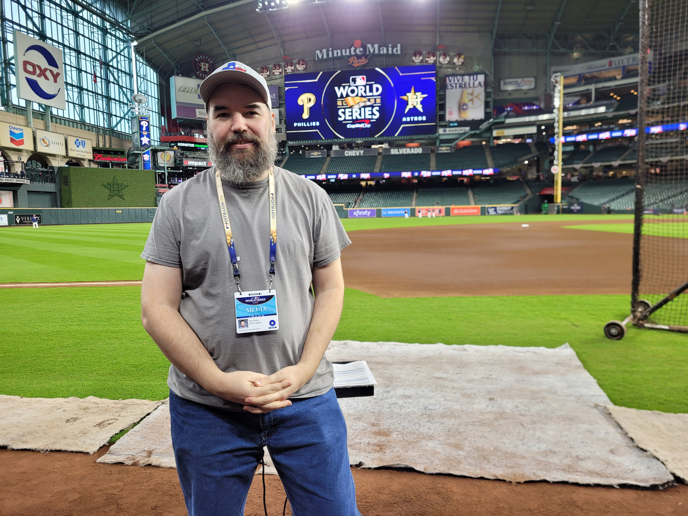

Who is Danny Clayton Jr
I was born & raised in the Houston, Texas area and attended college at San Jacinto college central campus from 1999-2001, were I graduated with a Certificate of Technology in Audio Engineering. In 2006 I married my wife Melissa Clayton, and in 2014 we welcomed our daughter Katelynn to the world. I have spent the last 22 years plus working as a location sound engineer in film & television production and I am now looking to change careers and become a Data Analyst. .

More About Me
 As part of my 22 years career in film & television production I have had the opportunity to work on many exciting projects with a wide range of topics. From work on historical documentaries on NASA and the US space program, to working sporting events like the World Series, NBA Finals, All-Star games, the Super Bowl, the Final Four, and also on reality shows, field news broadcast, corporate videos, and many more.
 I like to spend my free time with my family as much as possible.
Our favorite way to vacation is going on cruise ships out of Galveston and visiting new ports, beaches, and countries. We also love going to
Rodeo Houston every year. I also play lots of board games with a good group of friends. Anything from light games like Ticket to Ride, to medium
games like Terraforming Mars, all the way to the more difficult ones like Twilight Imperium. I also enjoy playing video games in my free time. I
prefer RPGs, grand strategy, and board game adaptations.
I like to spend my free time with my family as much as possible.
Our favorite way to vacation is going on cruise ships out of Galveston and visiting new ports, beaches, and countries. We also love going to
Rodeo Houston every year. I also play lots of board games with a good group of friends. Anything from light games like Ticket to Ride, to medium
games like Terraforming Mars, all the way to the more difficult ones like Twilight Imperium. I also enjoy playing video games in my free time. I
prefer RPGs, grand strategy, and board game adaptations.